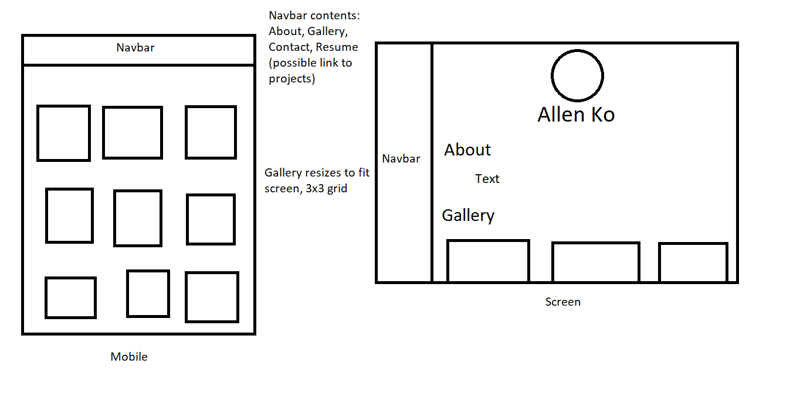

The site was made primarily with CSS Grid, with a wrapper encompassing the header, article, and footer, and a navbar as a completely separate area. There is a second grid for the gallery that splits it into a 3x3 grid, although this may change in the finished website depending on what works I have to show. The projects are also part of this grid, although more space is dedicated to the text that describes the process of the project.
Right now, the goal of the portfolio is to show off my more creative works, and I'd like to include things I've made other than games I've programmed, such as images/sprites that I've made or will make in the future. The audience will be people in the game design industry looking to hire me, although once I've gotten a more specific set of skills I plan to cater more for level design and game balance. My works take up most of the page, at 300px by 300px.
For the final version, I plan on adding a dropdown menu for the projects instead of placing them on the navbar. I also might want to change the layout a bit to arrange my works in something other than a grid, since it seems a little clumped together.
All non-placeholder images were made and taken by me.
